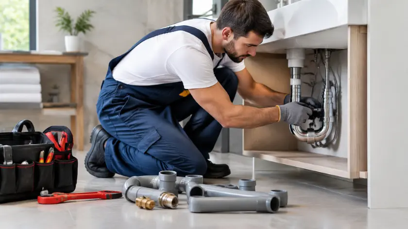

Ana Sayfa

7/24 Acil Sıhhi Tesisat (Ana Sayfa)
Musluk, batarya, klozet, duşakabin, su deposu montajı ve tüm genel sıhhi tesisat arızalarınız için ana sayfamıza göz atın.
Ana Sayfaya Dön →Evinizdeki fayansları, parkeleri veya duvarları boş yere kırdırmayın. Akustik dinleme cihazı, termal kamera ve pimaş içi endoskopik görüntüleme teknolojimizle gizli su sızıntılarını noktasal olarak tespit ediyor, ortalama 30 dakikada adresinize ulaşıp garantili olarak onarıyoruz.
Duvar içlerinde veya şap altında başlayan su sızıntıları erken müdahale edilmediğinde hem kendi dairenizde hem de alt komşunuzda ciddi yapısal hasara yol açar.
Aşağıdaki durumlardan birini yaşıyorsanız tesisatınızda gizli bir sızıntı bulunuyor demektir:

Geleneksel yöntemlerle kaçağı bulmak için banyo veya koridor zemininin komple kırılması hem günlerce süren tadilat masrafı hem de toz ve moloz demektir. Pulsar Tesisat olarak hassas akustik mikrofonlar ve termal kameralarla sızıntıyı milimetrik olarak işaretliyor, sadece arızalı borunun olduğu noktaya müdahale ediyoruz.
WhatsApp Ön Teşhis Desteği: Alt komşu tavanındaki veya duvarınızdaki kabarmanın fotoğrafını WhatsApp'tan göndererek ustamızdan anında ön bilgi ve net fiyat alabilirsiniz.
Evinizi kirletmeden, komple tadilata sokmadan ortalama 30-45 dakika içerisinde su sızıntısını tespit edip kalıcı olarak onarıyoruz.
Temiz su tesisatınızı manometre ile basınç testine alıyor, frekans yükseltici hassas akustik dinleme cihazımızla fayansları hiç kırmadan suyun sızdığı boru noktasını ses dalgalarıyla tespit ediyoruz.
Sıcak su ve kombi petek hatlarını termal kamerayla tarayarak şap altındaki ısı yayılımını görüntülüyor; pis su gider borularını ise yüksek çözünürlüklü pimaş içi kamerayla içeriden inceliyoruz.
Evinizi kırmadan ve kirletmeden yalnızca sızıntının olduğu noktada (genellikle tek bir fayans ölçüsünde) açma yapıyor, arızalı boruyu 1. sınıf malzemeyle onarıp ortalama 45 dakikada teslim ediyoruz.
Hayır, tespit aşamasında hiçbir yer kırılmaz. Akustik dinleme cihazı ve termal kamera ile kaçağın olduğu boru noktasal olarak belirlenir; onarım için yalnızca sızıntının bulunduğu noktada genellikle tek bir fayans kaldırılarak tamirat yapılır.
Şap altındaki temiz su borularında, sıcak su hattında veya pimaş gider ek yerlerinde oluşan gizli sızıntılar üst yüzeyde ıslaklık yapmadan doğrudan beton içerisinden alt dairenin tavanına süzülür. Cihazlı ölçümle sızıntının temiz su mu yoksa gider kaynaklı mı olduğunu net olarak ayırıyoruz.
Cihazlarla noktasal su kaçağı tespiti ortalama 20-30 dakika sürer. Tespit edilen arızalı borunun onarımı ise kaçağın derinliğine ve yerine göre genellikle 30-45 dakika içinde tamamlanarak tesisatınız aynı gün kullanıma açılır.
Evet, kalorifer ve sıcak su borularındaki sızıntıları yüksek çözünürlüklü termal kameralarımızla ısı haritası çıkararak parke veya şap altında noktasal olarak tespit ediyor ve kırmadan/dağıtmadan onarıyoruz.
Barbaros Hayrettin Paşa Mah. (34516) merkezimizden tam donanımlı mobil kaçak tespit aracımızla Esenyurt, Beylikdüzü ve Avcılar'ın tüm mahallelerine ortalama 30 dakikada ulaşıyoruz:
Komisyonsuz Doğrudan Usta Hizmeti: Barbaros Hayrettin Paşa Mah. 2263. Sk. No: 27/A (34516 Esenyurt) adresindeki kendi iş yerimizden çıkıp geliyoruz. Aracı çağrı merkezleriyle değil, doğrudan cihazlı tesisat ustası Özgür Polat (0554 122 38 38) ile muhatap olursunuz.
Su kaçağı tespitinin yanı sıra Esenyurt, Beylikdüzü ve Avcılar genelinde sunduğumuz diğer garantili tesisat çözümlerimizi inceleyin.

Musluk, batarya, klozet, duşakabin, su deposu montajı ve tüm genel sıhhi tesisat arızalarınız için ana sayfamıza göz atın.
Ana Sayfaya Dön →Kırmadan robot cihaz ve pimaş içi kamerayla mutfak, lavabo, klozet, banyo ve ana gider tıkanıklıklarını 30 dakikada açıyoruz.
Tıkanıklık Açma Detayları →
Peteklerin altı ısınmıyor mu? Çift yönlü darbeli makine ve koruyucu kimyasalla evinizi kirletmeden petek temizliği yapıyoruz.
Petek Temizliği Detayları →
Doğalgaz boru hattı döşeme, gaz kaçağı tamiri, fleks değişimi, ocak doğalgaz dönüşümü ve kombi bakım/arıza onarımı.
Doğalgaz & Kombi Detayları →